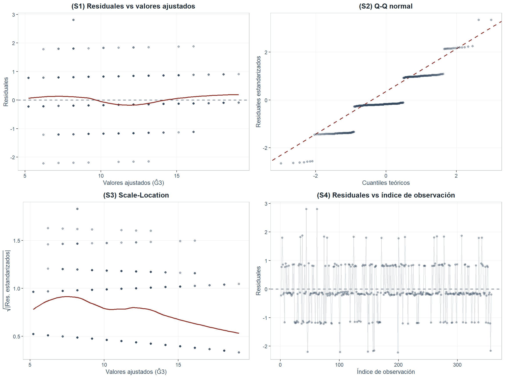
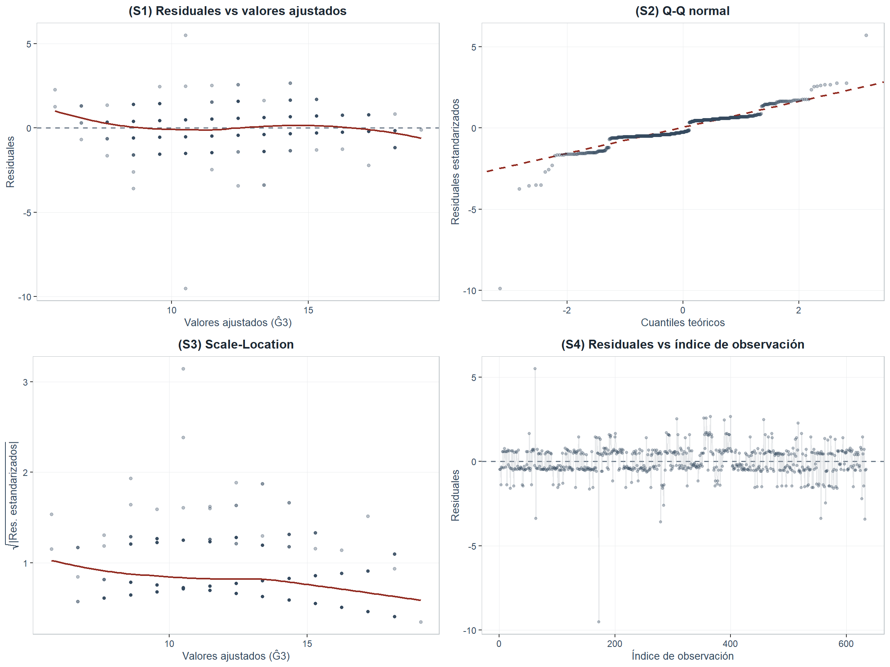

4 Diagnóstico de supuestos
4.1 Supuestos del modelo
La inferencia de §2 y §3 descansa sobre cuatro supuestos clásicos de \(G3_i = \beta_0 + \beta_1 G2_i + \varepsilon_i\) (Montgomery y Runger, 2021, Cap. 11): (S1) linealidad de \(E(G3 \mid G2)\); (S2) normalidad \(\varepsilon_i \sim \mathcal{N}(0,\sigma^2)\); (S3) homocedasticidad \(\text{Var}(\varepsilon_i) = \sigma^2\); (S4) independencia \(\text{Cov}(\varepsilon_i, \varepsilon_j) = 0\). Cada supuesto se examina con prueba formal y respaldo gráfico. Con \(n_{\text{MAT}} = 357\), \(n_{\text{POR}} = 634\), Shapiro-Wilk detecta desviaciones triviales con alta potencia; se complementa con Lilliefors (Conover, 1999). Por el TCL, violaciones moderadas de (S2) no invalidan la inferencia asintótica sobre \(\hat\beta_1\) (Casella y Berger, 2002, Teo. 10.1.6); sin embargo, la cobertura nominal de los IP individuales sí depende de la normalidad de \(\varepsilon\) y se evaluará empíricamente por bootstrap en el Anexo 9.2.5.
4.2 Diagnóstico — Matemáticas (MAT)
4.2.1 Pruebas formales
| Supuesto | Hipótesis nula (\(H_0\)) | Prueba | Estadístico | p-valor | Decisión (\(\alpha = 0.05\)) |
|---|---|---|---|---|---|
| (S1) Linealidad | \(E(G3|G2=x) = \beta_0 + \beta_1 x\) (especificación lineal) | RESET de Ramsey | F = 1.9571 | 0.1428 | No rechaza \(H_0\) |
| (S2) Normalidad | Los residuales son normales | Shapiro-Wilk | W = 0.8979 | < 0.001 | Rechaza \(H_0\) |
| (S2) Normalidad | Los residuales son normales | Lilliefors (KS) | D = 0.2324 | < 0.001 | Rechaza \(H_0\) |
| (S3) Homocedasticidad | Varianza constante (homocedasticidad) | Breusch-Pagan | BP = 12.2972 | < 0.001 | Rechaza \(H_0\) |
| (S4) Independencia | No existe autocorrelación en los residuales | Durbin-Watson | DW = 1.8707 | 0.2212 | No rechaza \(H_0\) |
| * Para n = 357, la prueba de Shapiro-Wilk es muy sensible a desviaciones triviales de la normalidad; Lilliefors es preferible en muestras grandes (Conover, 1999). La prueba DW se evalúa sobre el orden de ingreso de las observaciones; en datos de corte transversal su interpretación es referencial. |
4.2.2 Respaldo gráfico

Figure 4.1: Gráficos de diagnóstico del modelo G3 ~ G2 en Matemáticas (MAT). Se presentan cuatro paneles: arriba izquierda, residuales vs valores ajustados (linealidad y homocedasticidad); arriba derecha, Q-Q normal (normalidad); abajo izquierda, Scale-Location (homocedasticidad); abajo derecha, residuales vs índice (independencia). La línea de referencia gris es la línea cero; la curva roja es un suavizador LOESS.
4.2.3 Lectura del diagnóstico en MAT
- (S1) Linealidad. LOESS plano sin curvatura sistemática. RESET de Ramsey (1969): \(F = 1.9571\), p = 0.1428 — no rechaza \(H_0\): compatible con especificación lineal. Las agrupaciones verticales reflejan el carácter discreto de G2 y G3, no violación del supuesto.
- (S2) Normalidad. Q-Q con alineación central razonable y desviaciones en colas. Shapiro-Wilk (\(W = 0.8979\), p = < 0.001) y Lilliefors (\(D = 0.2324\), p = < 0.001) rechazan \(H_0\). Con n = 357, estas pruebas detectan con alta potencia desviaciones estadísticamente significativas pero de magnitud práctica menor. El TCL garantiza la validez asintótica de la inferencia sobre \(\beta_1\) (Casella y Berger, 2002, Teo. 10.1.6); la cobertura nominal de los IP individuales asume normalidad y se examina por bootstrap en el Anexo 9.2.5.
- (S3) Homocedasticidad. Breusch-Pagan: BP = 12.2972, p = < 0.001: rechaza \(H_0\). La heterocedasticidad detectada implica que los errores estándar clásicos basados en MCO pueden estar sesgados; en consecuencia, los IC y las pruebas t/F deben interpretarse con cautela. Como remedio estándar se recomiendan errores estándar robustos (HC0–HC3; White, 1980) o mínimos cuadrados ponderados (WLS).
- (S4) Independencia. \(DW = 1.8707\) (p \(\geq\) 0.05: no rechaza \(H_0\), sin evidencia de autocorrelación). Al ser datos de corte transversal, el DW es referencial; la independencia se sostiene por el diseño muestral (Cortez y Silva, 2008).
4.3 Diagnóstico — Portugués (POR)
4.3.1 Pruebas formales
| Supuesto | Hipótesis nula (\(H_0\)) | Prueba | Estadístico | p-valor | Decisión (\(\alpha = 0.05\)) |
|---|---|---|---|---|---|
| (S1) Linealidad | \(E(G3|G2=x) = \beta_0 + \beta_1 x\) (especificación lineal) | RESET de Ramsey | F = 7.825 | < 0.001 | Rechaza \(H_0\) |
| (S2) Normalidad | Los residuales son normales | Shapiro-Wilk | W = 0.8599 | < 0.001 | Rechaza \(H_0\) |
| (S2) Normalidad | Los residuales son normales | Lilliefors (KS) | D = 0.1601 | < 0.001 | Rechaza \(H_0\) |
| (S3) Homocedasticidad | Varianza constante (homocedasticidad) | Breusch-Pagan | BP = 2.4706 | 0.116 | No rechaza \(H_0\) |
| (S4) Independencia | No existe autocorrelación en los residuales | Durbin-Watson | DW = 1.8764 | 0.1169 | No rechaza \(H_0\) |
Para n = 634, aplican las mismas consideraciones metodológicas descritas en la Tabla 4.1
4.3.2 Respaldo gráfico

Figure 4.2: Gráficos de diagnóstico del modelo G3 ~ G2 en Portugués (POR). Se replica la estructura de cuatro paneles de la Figura 4.1 para permitir la comparación directa entre asignaturas.
4.3.3 Lectura del diagnóstico en POR
- (S1) Linealidad. LOESS aproximadamente plano. RESET de Ramsey: \(F = 7.825\), p = < 0.001 — rechaza \(H_0\). Con \(n = 634\) la prueba detecta con alta potencia curvaturas leves; la aproximación lineal sigue siendo funcional, con el matiz de que un término cuadrático en G2 podría mejorar marginalmente el ajuste. La dispersión en torno a la recta es coherente con \(\hat\sigma = 0.964\), mayor que en MAT.
- (S2) Normalidad. Shapiro-Wilk (\(W = 0.8599\), p = < 0.001) y Lilliefors (\(D = 0.1601\), p = < 0.001) rechazan \(H_0\). Con n = 634 el TCL preserva la validez asintótica de la inferencia sobre \(\beta_1\); la cobertura nominal de los IP individuales asume normalidad y se examina por bootstrap en el Anexo 9.2.5.
- (S3) Homocedasticidad. Breusch-Pagan: \(BP = 2.4706\), p = 0.116 — no rechaza \(H_0\): el supuesto de homocedasticidad se mantiene en Portugués.
- (S4) Independencia. \(DW = 1.8764\) (p \(\geq\) 0.05). Misma consideración que en MAT.
4.4 Resumen comparativo del diagnóstico
| Supuesto | MAT — estadístico | MAT — p-valor | MAT — decisión | POR — estadístico | POR — p-valor | POR — decisión |
|---|---|---|---|---|---|---|
| (S1) Linealidad (RESET de Ramsey) | F = 1.9571 | 0.1428 | No rechaza \(H_0\) | F = 7.825 | < 0.001 | Rechaza \(H_0\) |
| (S2) Normalidad (Shapiro-Wilk) | W = 0.8979 | < 0.001 | Rechaza \(H_0\) | W = 0.8599 | < 0.001 | Rechaza \(H_0\) |
| (S2) Normalidad (Lilliefors) | D = 0.2324 | < 0.001 | Rechaza \(H_0\) | D = 0.1601 | < 0.001 | Rechaza \(H_0\) |
| (S3) Homocedasticidad (Breusch-Pagan) | BP = 12.2972 | < 0.001 | Rechaza \(H_0\) | BP = 2.4706 | 0.116 | No rechaza \(H_0\) |
| (S4) Independencia (Durbin-Watson) | DW = 1.8707 | 0.2212 | No rechaza \(H_0\) | DW = 1.8764 | 0.1169 | No rechaza \(H_0\) |
Decisión evaluada con \(\alpha = 0.05\). Para (S2), el TCL protege la validez asintótica de la inferencia sobre \(\beta_{1}\); la cobertura nominal de los IP individuales asume normalidad de \(\epsilon\) y se examina por bootstrap (Anexo A). La prueba RESET de Ramsey (1969) complementa la inspección visual de linealidad; un análisis cuadrático adicional cuantifica la magnitud práctica de cualquier curvatura detectada.
Tabla 4.3: el patrón difiere entre asignaturas. En MAT: RESET no rechaza linealidad (p = 0.1428) pero Breusch-Pagan detecta heterocedasticidad (p = < 0.001). En POR: homocedasticidad compatible (p = 0.116) pero RESET rechaza linealidad estricta (p = < 0.001); el suavizador LOESS se mantiene próximo a cero y la inclusión de un término cuadrático \(G2^2\) aporta solo \(\Delta R^2 \approx 0.0001\), magnitud trivial que confirma curvatura estadísticamente detectable pero prácticamente irrelevante: la aproximación lineal sigue siendo defendible por parsimonia. La normalidad se rechaza en ambos modelos; el TCL garantiza la validez asintótica de la inferencia sobre \(\hat\beta_1\) (Casella y Berger, 2002, Teo. 10.1.6) pero la cobertura nominal de los IP individuales asume normalidad de \(\varepsilon\) —cuantificada empíricamente por bootstrap en el Anexo 9.2.5—. La independencia queda garantizada por el diseño muestral de corte transversal (Cortez y Silva, 2008). Para la heterocedasticidad de MAT, el análisis robusto HC3 del Anexo 9.2.3 confirma que los IC de la Sección 2.6 mantienen validez aproximada.